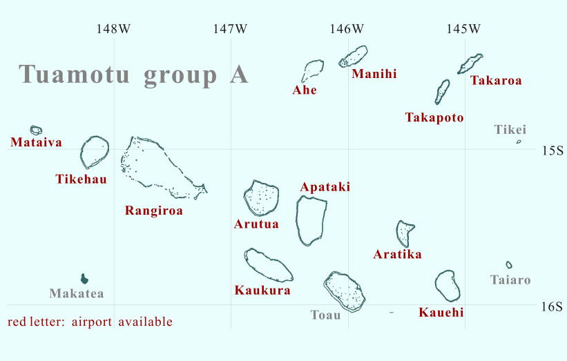

FS9 / FSX Addon Scenery French Polynesia
Tuamotu Archipelago Group A

Click the desired island
Mataiva is located in Tuamotu islands westernmost.
I knew there was an island named Mataiva in the west of Rangiroa when
I made the Rangiroa Scenery for FS2000.
However, I was surprised to see the aerophotograph.
The whole island forms a huge shallow pool.
So I had a hard time in making the texture.
Tikehau, located in the middle of Mataiva and Rangiroa, is known as an island where the density of the fish is the highest in the world. There is the channel called the Tuheiava pass in the west of the atoll. The Tuheiava pass has a lot of famous diving spots around the Tuheiava pass. The islands in the lagoon are called "Bird Islands" where a lot of wild birds inhabit.

Rangiroa is the largest atoll in the Tuamotu islands. The lagoon is world famous for scuba diving and snorkeling, and has the clearest waters in the world.

Kia-Ora Village located in east of Avatoru.
A combination of a yacht and a classical flying boat against the background of islets (motu) scattered in the lagoon.
Air Tahiti ATR 42, approaching Rangiroa airport.
Arutua is located close to Rangiroa.
This circular-shape atoll with a diameter 29 km,
is composed of 57 groups of islets that enclose a huge lagoon.
In the explanation concerning Arutua,
there is only one islet in the lagoon.
However, I designed the Arutua scenery without knowing it.
A lot of islets are sprinkled in the lagoon in my scenery.
It is likely that those islets are being submerged a little
excluding the big islet at the center of the lagoon.
In the lagoon ，many fish beds and Tahiti cultured pearl farms are being sprinkled. I imagine the outline of this atoll looks like a chestnut :-)).
Apataki is located in 17 km east of Arutua and 25 km northwest of Toau.
Apataki is one of the quit large atolls in Tuamotu,
whose size of the atoll is 31km long and 25km wide.
The huge and deep (I think so) lagoon is connected to the open sea by two channels,
northwest corner and southwest corner of this atoll.
Toau is the neighbor atoll of Fakarava. Toau is a oval-shaped atoll twice smaller than Fakarava. Three families only live on the island though it is a medium-scale atoll. The lagoon and the open sea are connected with two passes in the southeast side of the atoll. Also there is a shallow pass in the north side of the atoll. Because the lagoon side makes a blind alley, the ships cannot enter the lagoon.
This is one of the Central Tuamotu atolls. The broad bean-shaped atoll of Kauehi lies 18 km northwest of Raraka and 33 km southest of Aratika. The atoll covers an area of 315 km², of which 15 km² is composed of a few highly elongated and narrow islets on the eastern and western sides. A passage on the south-west coast links the lagoon to the open sea.
Taiaro, a small circular-shaped atoll, is located 42 km to the northeast of Raraka. The atoll that consists of an single island encloses a lagoon completely. The sandy-bottomed lagoon is deep for its surface area; the depth is about 20m in average.
Usually the lagoon has no channel linking it with the open sea; only when the tide level is high, the water from the open sea reaches the lagoon via a few narrow passes. As a result, its waters are a high concentration of salt.
Manihi is located in the northeast of Rangiroa. Facing northeast/southwest, Manihi forms an oval with a length of 27 km and a width of about 8 km. With clear lagoon, this island is famous worldwide for the cultivation of black pearl. The deep, navigable Tairapa pass through the coral reef is located to the extreme southwest next to the village of Paeua. The pass has a depth of 60 m except at the end, where a straight passage was dug to allow supply ships to enter the lagoon. This main village is at the entrance to the pass and is 2.8 km from the airport. The circumference of the atoll is dense with coconut palm trees. Manihi is an beautiful atoll that is suitable to calling the necklace island.
Takapoto is located in 10 km southwest of Takaroa and 70 km southeast of Manihi.
There is no pass where a ship can sail,
though the small spillways cut the motu into pieces
in the northwest part and the southeast part of the atoll.
Although Takapoto is a rather small atoll，
the lagoon is deep, and its depth reaches 40m.
Takaroa is 24 km long and 8 km wide. It is 8 km from Takapoto. With a lagoon that offered excellent ship anchoring and a 3 m deep pass (Teavanae) connecting it with the ocean, Takaroa became popular very early with pearl and mother-of-pearl traders. The small village of Teavaroa located 2 km from the airport.